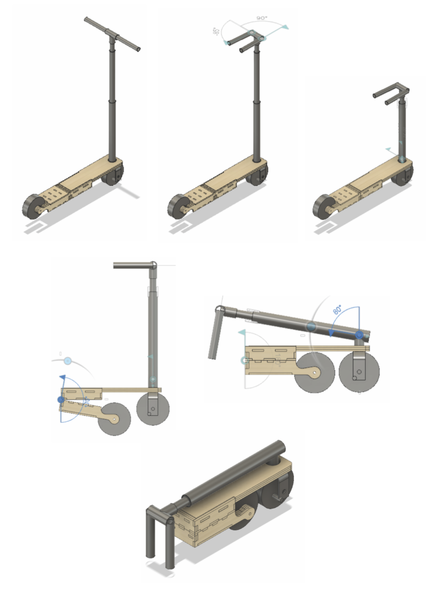
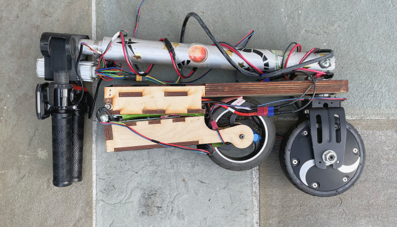

Above: Initial concept sketches.
Below: Final Deck CAD Model and Folding Demonstration
 Design
As a capstone project for one of my engineering classes, I designed and constructed a fully functional portable electric scooter from scratch.
My goal for this project was to redesign a traditional electric scooter to be more portable and therefore easier to store and transport. I noticed that traditional electric scooters were heavy and only folded at one joint, making them clunky and difficult to carry onto public transportation or store at school.
Therefore, I set out to explore a variety of ways in which electric scooters could be compacted down into a portable form. After numerous iterations and careful planning of measurements, I ended up with the final deck CAD Model pictured to the left.
For a better view of the model, I recommend checking out this link hosted by the CAD software I used.
Link to CAD ModelClick on the “Explode Model” Icon and move the slider around to see what’s going on inside the deck!
Construction
I constructed the final scooter using laser-cut pieces to form deck, three hand-cut aluminum rods for the handlebars, a 3D printed joint to secure the handlebars, an LCD monitor, an Arduino, and an in-wheel motor powered by batteries stored inside the deck.
I used the Aruduio to display information on the LCD monitor such as speed, RPM, and distance travelled. These metrics were captured from a sensor located on the back wheel.
The manufacturing process was the most challenging part of the project, as I ran into complications with building the joints from the materials I had available. However, by the end of the project, the scooter was completely ridable for short distances. Overall, it was a very rewarding project being able to take an idea and implement it from start to finish.